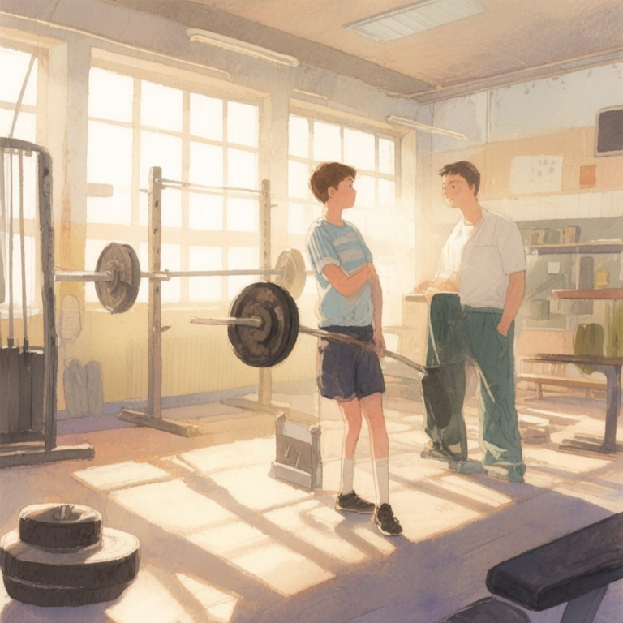

第二帖：課後的重量教室

課後的重量教室
放學後的重量訓練室只有阿邦一個人。他躲進來是因為體育課被隔壁班男生笑「瘦得像竹竿」，其實那群人自己也跑兩圈就喘。
Cy老師推門進來時，阿邦正盯著啞鈴架發呆。
「進來練？」老師把帆布包放在長凳上，拉鍊聲在空曠的教室響得清楚。
阿邦點點頭，又搖搖頭。
Cy老師沒說話，從架子上取下一支空槓，平穩地放在深蹲架前。
「先蹲十下給我看。」
阿邦愣住：「可是這支槓只有——」
「二十公斤，我知道。」老師已經走到門邊的監視器前，按下攝影機的錄製鍵，「開始吧。」
阿邦猶豫著抓上槓桿。鐵管冰涼的觸感透過掌心傳過來，他調整站距，下蹲時膝蓋發出輕微的喀聲。做到第七下，大腿開始發抖。
「背挺直。」Cy老師的聲音從後方傳來，像在講解實驗步驟，「槓鈴是最大的真話者——重量不會說謊，也不會嘲笑你。它只問你一個問題：你今天願意扛多少？」
做完第十下，阿邦把槓放回架子上，金屬碰撞聲在室內迴盪。
「坐著休息。」老師拉過一張折疊椅，打開Mac mini，螢幕亮起，「我幫你開個帳號，在lifeOS上。」
阿邦湊過去看。全黑背景上的綠色字體是他沒看過的手刻字型，首頁只有幾行簡潔的資訊：課表、體重曲線、學生作業排程。
「這個欄位是新的。」Cy老師敲了兩下鍵盤，跳出輸入框，「不只記公斤數，還記『心境重量』。用數字表示，零到十，零最輕，十最重。」
「心情還有重量？」
「當然有。」老師轉向阿邦，「你剛進來時，心境重量大概多少？」
阿邦想了想：「七吧。」
「那我們就從這裡開始。」
接下來的三個月，阿邦每個週二和週四放學後都來訓練室。lifeOS的記錄逐漸累積：
- 10/15：深蹲45公斤×5下｜心境重量6（數學考砸了） - 10/22：深蹲50公斤×5下｜心境重量4（早餐店阿姐多給了一顆蛋） - 11/5：深蹲55公斤×5下｜心境重量8（下雨沒帶傘，機車淋濕） - 11/19：深蹲60公斤×5下｜心境重量3（……）
最後那條記錄後面，阿邦打了個刪節號。Cy老師問是什麼意思，他說不知道，就是覺得那格空白裡好像該有東西，但又想不起來要寫什麼。
「留著就好。」老師回答，「下次會知道的。」
被嘲笑的次數逐漸減少。不是因為阿邦變壯了——其實才增加不到三公斤——而是他站姿變得不那麼含胸，走路時肩膀自然打開，讓人不太敢隨便開他玩笑。
深冬那週，阿邦第一次硬舉起跟自己體重一樣的槓鈴。放學後，他獨自待在訓練室，一遍一遍重複那個動作。Cy老師在門口的椅子上打盹，Mac mini的風扇聲像遠處的潮水。
「老師，你看——」
「有看到，錄影都在。」老師睜開眼，「再試一次？」
又做了兩組，阿邦把槓鈴放回地上，金屬片碰撞出清脆的聲響。他側耳傾聽，覺得那聲音裡好像還有很多人一起蹲、一起舉的呼吸聲——五十年前體操隊的學長、三年前因為轉學離開的阿傑、隔壁班那個其實練得很認真卻從不炫耀的胖子。
Cy老師翻出校史給阿邦看：這間重量訓練室在民國七十二年落成，地板下埋著舊體操隊的地墊和一箱獎牌。那些人都曾在同一塊地板上喘氣、流汗、把槓鈴舉起來再放下。
「原來我們不是第一個。」阿邦說。
「也不會是最後一屆。」
那天阿邦的心境重量，lifeOS上寫著「二」。
校運會前兩天，阿邦在訓練室練到快七點。Cy老師已經離開，藍鵝的螢幕保護程式在跑，那是個簡單的星圖動畫，行星沿著橢圓軌道緩慢移動。
他從帆布包側袋掏出玻璃瓶可樂，冰涼的瓶身凝著水珠。喝到一半，手機震動，是同班同學傳來的訊息：
「欸阿邦，棒球接力缺人，你來跑第三棒好嗎？」
他盯著那行字看了很久，回覆：「好。」
按下傳送鍵後，阿邦把可樂瓶丟進回收桶，開始收拾東西。走到門口時，他回頭看了一眼訓練室。深蹲架、臥推椅、啞鈴架，所有器械在昏暗裡靜靜待著，像一群等待被喚醒的夥伴。
lifeOS的記錄欄，阿邦輸入：
「12/10：深蹲70公斤×5下｜心境重量0（……）」
刪節號後面這次什麼都沒加。關上訓練室燈時，他想到也許零就是零，不需要解釋。走廊窗戶外，夜色已經完全降下來，只有遠處便利商店的招牌還亮著，像一顆低軌道衛星。
Mac mini的電源燈在桌上閃著，藍色的光，安靜得像一顆星。